Research project
Operational and Safety Impact of Encroachments in Heterogeneous Traffic
June 2024 – October 2025 · Undergraduate thesis
| Type | Undergraduate thesis research |
|---|---|
| Lab | Moinul Hossain, Ph.D. Lab, Islamic University of Technology |
| Supervisors | Prof. Moinul Hossain (IUT); Dr. Md. Asif Raihan (ARI, BUET) |
| Collaborator | Prof. Mohammed Quddus, Imperial College London |
| Methods | RF-DETR, ByteTrack, Kalman filter, bird’s-eye-view transformation, SUMO, TraCI, Time-to-Collision |
| Outputs | TRB 2026 paper (accepted and presented); journal paper in preparation for Accident Analysis & Prevention |
Overview
Encroachment is the unauthorised occupation of public road space by on-street parking, waiting rickshaws and easy bikes, street vendors and loading activity. In Dhaka it is part of everyday traffic, and its effect is amplified by heterogeneous, weak lane-discipline traffic. The link between encroachment and congestion is widely acknowledged, but quantitative, micro-level evidence on its operational and safety effects has been scarce, particularly in mixed traffic.
This project developed a data-driven framework that combines computer vision on roadside video with calibrated microscopic simulation. It measures traffic as it actually operates with encroachments, then reproduces the same corridors without them in SUMO, so that the difference in flow, speed and conflict risk can be attributed to encroachment.
Objectives
- To identify and quantify the impacts of the types of encroachment commonly observed on urban roadways, with emphasis on traffic safety and operational efficiency.
- To evaluate the potential safety and operational improvements from removing these encroachments.
Study Area and Data
Video was recorded at four locations in Dhaka and Gazipur with different land-use and traffic characteristics: Mirpur (two corridors, C1 and C2), Uttara, Banani and Board Bazar, giving 4.08 hours of footage in total. The vehicle classes observed included bicycles, rickshaws, motorcycles, CNG auto-rickshaws, easy bikes, private cars, microbuses, pickup trucks, human haulers, covered vans, buses and trucks.
Fixed roadside landmarks such as lamp posts and electric poles were surveyed with a measuring tape to provide ground control for converting pixel coordinates to real-world coordinates. Surveyors also recorded the spot speeds of 87 vehicles, chosen by stratified random sampling across vehicle types, to validate and calibrate the video-based speeds. The detection model was fine-tuned on 145 annotated frames taken from the study videos.

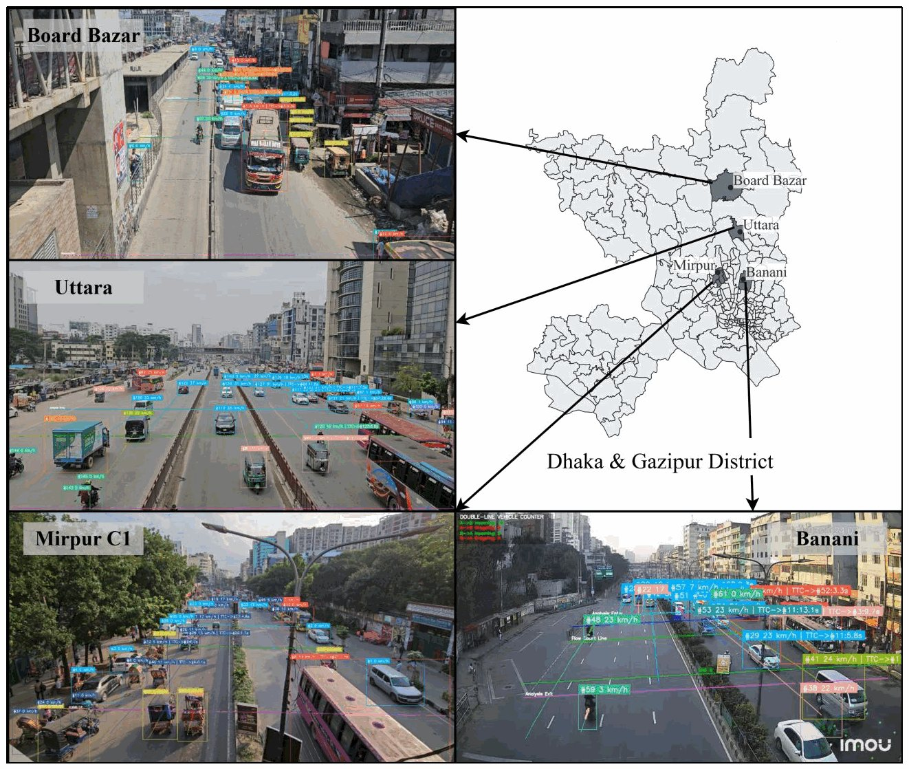
Methodology

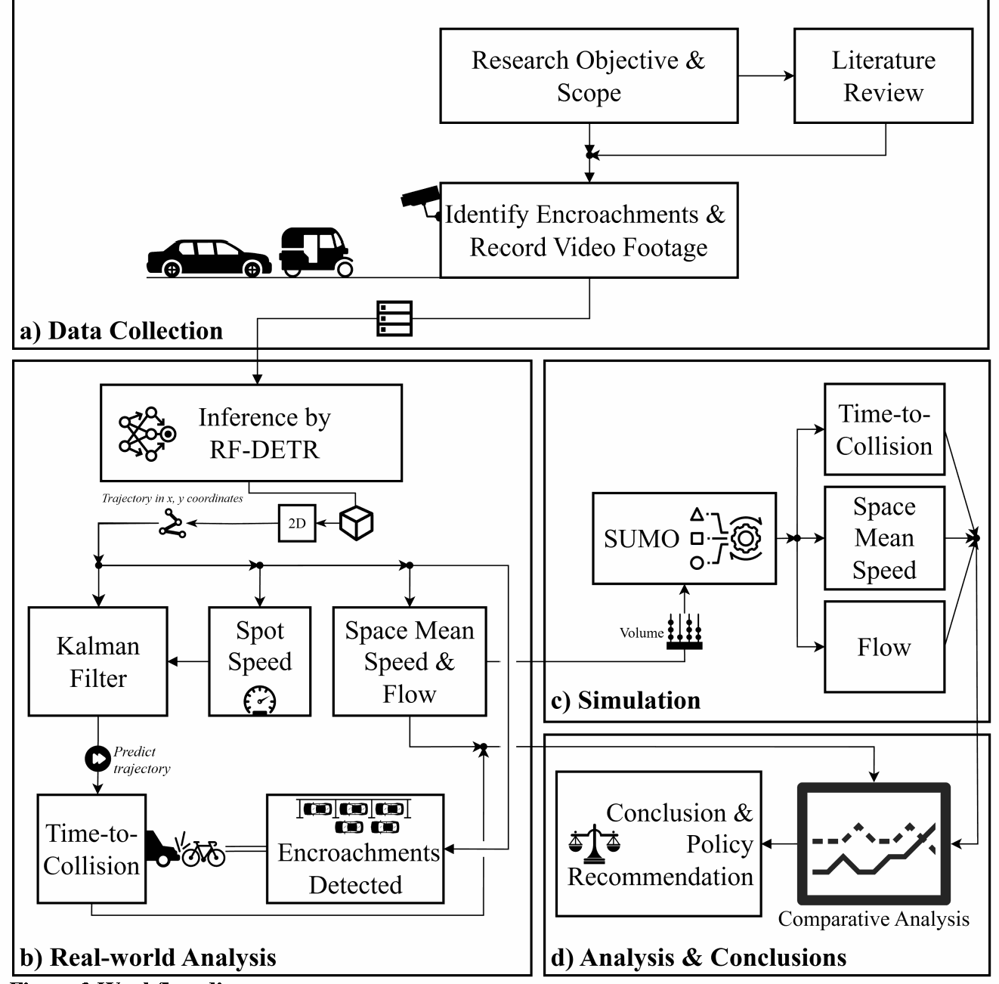
Computer vision pipeline
- Detection and tracking. A fine-tuned RF-DETR (Roboflow Detection Transformer) model detects vehicles frame by frame, and ByteTrack keeps a persistent identity for each vehicle. A transformer detector was chosen over faster CNN-based models because it handles the partially occluded and visually ambiguous objects common in dense mixed traffic.
- Perspective transformation. Four ground control points convert image coordinates to metres, so trajectories are analysed in a bird’s-eye view.
- Motion estimation. A constant-velocity Kalman filter estimates each vehicle’s position and velocity, with a 5.0 m/s² acceleration constraint and exponential smoothing to keep trajectories physically realistic and to predict future positions.
- Speed calibration. Raw video speeds underestimated low speeds and overestimated high ones. A piecewise linear model with an automatically selected breakpoint at 6.13 m/s was fitted on 80% of the ground-truth sample and validated on the remaining 20%. Calibration reduced the RMSE from 0.935 m/s to 0.504 m/s (1.81 km/h) and raised R² from 0.602 to 0.884, within the [−3, +2] km/h tolerance used by enforcement authorities in several countries.
- Event detection. An object is classed as an encroachment when it stays in a curbside zone for at least 30 seconds while moving less than 1 m. Time-to-Collision is computed from the Kalman state vectors of leader and follower vehicles using the time of closest approach, and each candidate event passes a five-stage filter (hysteresis, persistence, confidence, angle validation and collision geometry) to remove false positives.

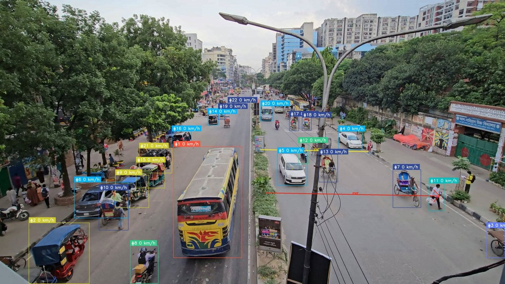

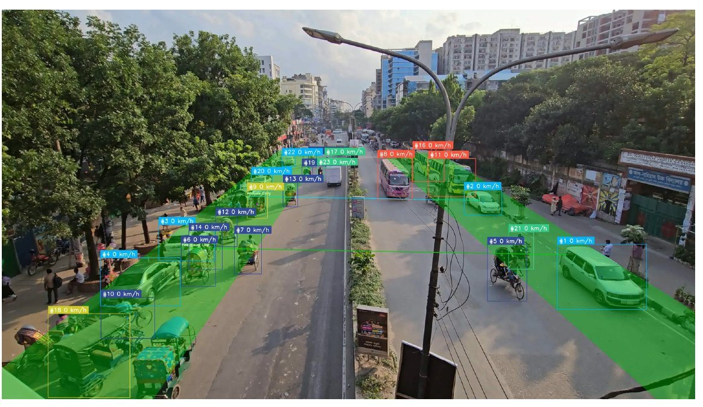

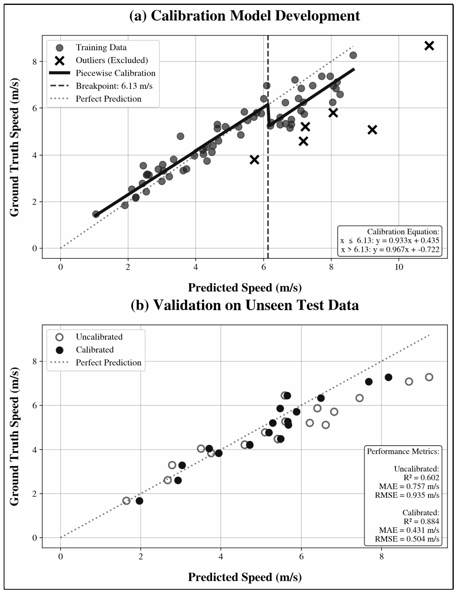
Microscopic simulation of encroachment-free conditions
Each corridor was rebuilt in SUMO (Simulation of Urban MObility) with Traffic Analysis Zones assigned to network edges and demand taken from the video-derived volumes and vehicle mix. The model was configured to represent Bangladeshi mixed traffic rather than default lane-based behaviour:
- Twelve vehicle types, including non-motorised rickshaws, rickshaw vans and bicycles alongside buses, CNGs, cars, motorcycles and trucks.
- Sub-lane movement with a lateral resolution of 0.8 m to represent weak lane discipline.
- Opportunistic lane changing (lcImpatience 0.1–0.5, lcPushy 0.1–0.8, lcSpeedGain 0.5–1.5) and vehicle-specific minimum gaps (0.8 m for rickshaws, 2.0 m for cars, 3.0 m for buses and trucks).
- Field-based maximum speeds (for example rickshaw 17 km/h, motorcycle 35 km/h, private car 40 km/h), accelerations of 0.8–2.5 m/s², decelerations of 2.0–4.5 m/s², and driver-imperfection values (σ) from 0.5 for cars to 0.8 for rickshaws.
- A 0.1 s step length, with floating car data, trip information and lane-change outputs extracted through TraCI.

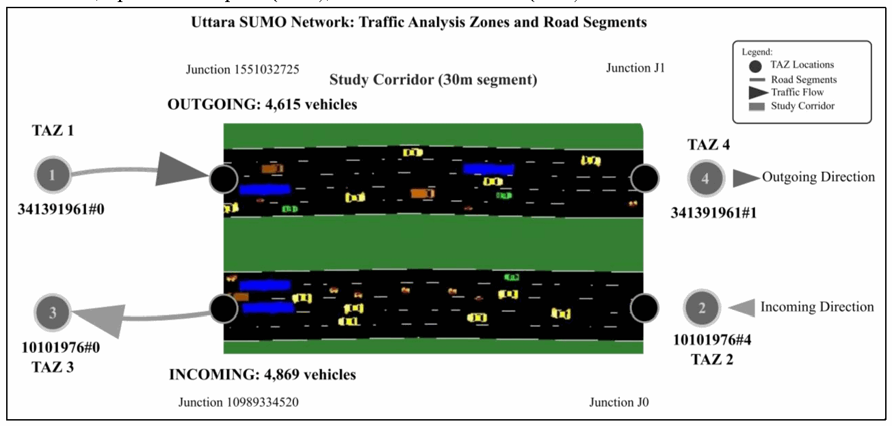
Comparative measures
Real-world (video) and ideal (simulated) conditions were compared on vehicle flow in 5-minute intervals, space mean speed (harmonic mean over the study segment) and the probability of critical TTC events, defined as interactions with TTC < 1.0 s among all interactions of interest (TTC ≤ 5 s).
Results
Detection performance
The fine-tuned RF-DETR model reached an mAP@0.50 of 57.5%, an mAP@0.50:0.95 of 35.6% and an mAR@0.50:0.95 of 56.7%, with training stopped early after 82 epochs once validation loss stabilised. This is sufficient for the application, since the analysis depends on trajectories rather than pixel-accurate boxes.

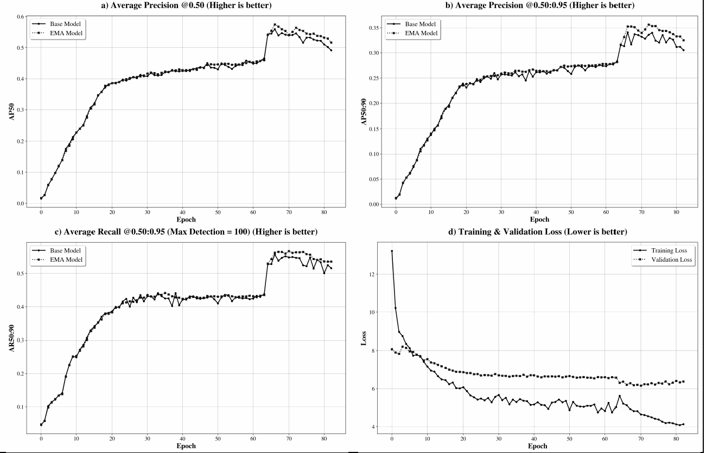
Extent and character of encroachment
463 encroachment incidents were identified. Encroachments were present for 2.87 of the 4.08 recorded hours, an average coverage of 70.3%. Using the 95th-percentile dwelling time (249 s) as the threshold, 94.8% of incidents were temporary, but the 5.2% that were permanent accounted for 25.3% of total dwelling time. Easy bikes (25.9% of incidents) and rickshaws (23.3%) were the most frequent encroachers. Private cars combined high frequency with long average stays (130.5 s), which points to illegal parking. Trucks were rare but had the longest average duration (160.8 s), consistent with curbside loading.
| Location | Encroached time / recorded time (s) | Coverage |
|---|---|---|
| Uttara | 2,132 / 3,802 | 56.1% |
| Mirpur C1 | 2,731 / 2,761 | 98.9% |
| Mirpur C2 | 1,676 / 1,838 | 91.2% |
| Board Bazar | 3,335 / 3,564 | 93.6% |
| Banani | 453 / 2,733 | 16.6% |
| All locations | 10,329 / 14,700 | 70.3% |
Table 1. Encroachment coverage by location.

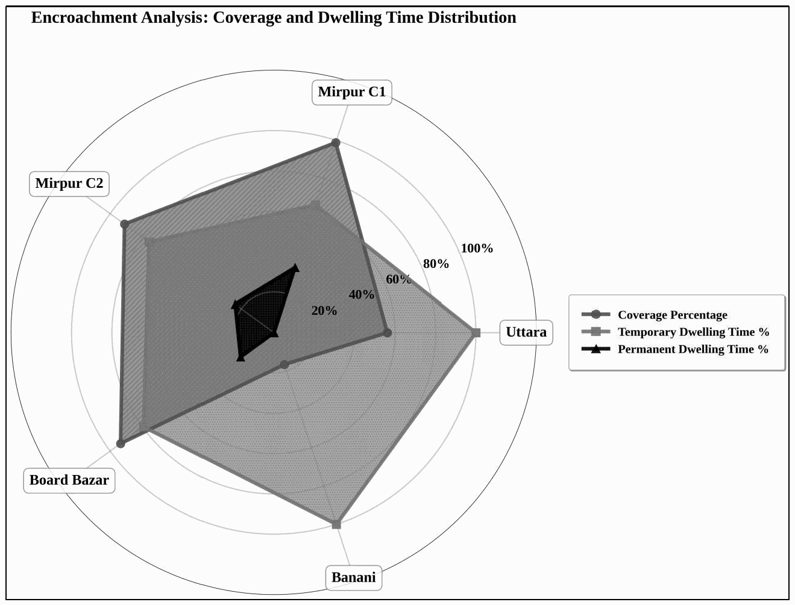

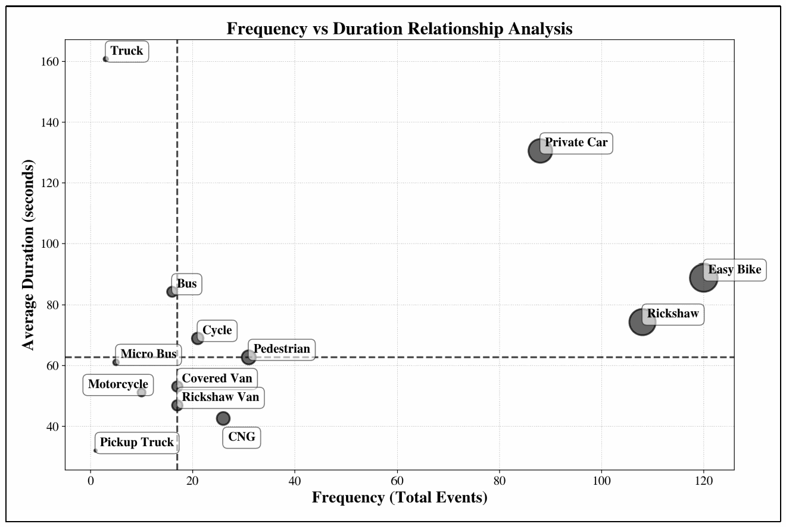
Operational and safety impact
Across locations the probability of a critical TTC event rose from about 3% in encroachment-free conditions to 21% with encroachment. Flow fell by 61% on average (between 18% and 85% across corridors), and space mean speed fell by about 34%. At Mirpur C1, simulated flow of 670 veh/h dropped to 132 veh/h in one interval, and at Banani the ideal space mean speed of 37.3 km/h was nearly halved.
| Location | Space mean speed, incoming (km/h): real | ideal | Critical TTC probability: real | ideal |
|---|---|---|---|---|
| Banani | 18.72 | 37.33 | 0.08 (214/2,751) | 0.04 (22/575) |
| Board Bazar | 23.13 | 35.11 | 0.18 (387/2,171) | 0.02 (28/1,139) |
| Mirpur C1 | 16.96 | 23.97 | 0.37 (1,063/2,874) | 0.03 (11/340) |
| Mirpur C2 | 21.99 | 23.69 | 0.31 (727/2,353) | 0.04 (16/402) |
| Uttara | 22.71 | 37.60 | 0.13 (551/4,307) | 0.02 (9/488) |
Table 2. Speed and safety outcomes: real-world (with encroachment) versus simulated (without encroachment).

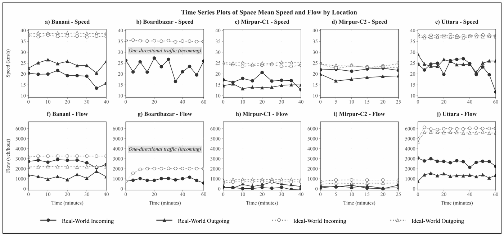

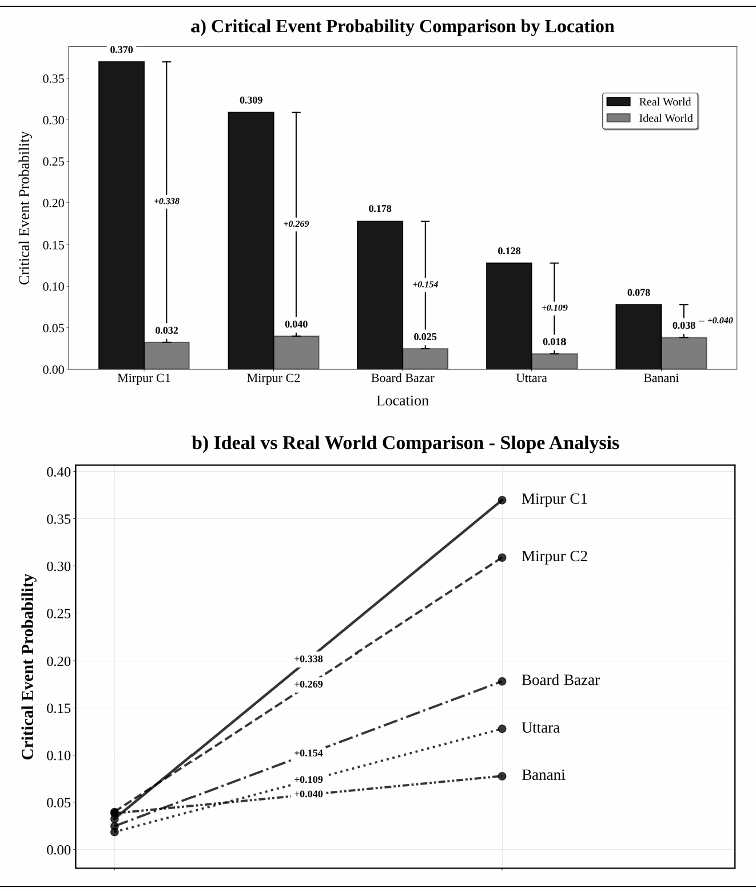
Implications
- Enforce parking regulations on major roads, including peak-hour bans on on-street parking and one-side parking on narrow streets.
- Address the mismatch between parking demand and legal supply through off-street facilities, updated parking standards and demand-based pricing.
- Work with informal transport operators and vendors through designated zones rather than relying on enforcement alone, since much encroachment is tied to livelihoods.
- Use continuous video monitoring as a low-cost alternative to manual observation for targeting enforcement.
Limitations and Future Work
Tracks are lost when a vehicle is occluded for more than about 1.5 s. A re-identification tracker such as StrongSORT could address this. Small, distant vehicles are harder to detect at the model’s 560-pixel base resolution. Planned work includes TensorRT FP16 inference for real-time use and a larger, more diverse training set.
My Contribution
Equal-contribution co-lead with two co-authors: field data collection at the study sites; development of the computer vision and SUMO workflow; analysis and interpretation of results; and preparation of the TRB 2026 manuscript and the journal version in preparation.
Supervisors: Prof. Moinul Hossain (IUT) and Dr. Md. Asif Raihan (Accident Research Institute, BUET). Collaborator: Prof. Mohammed Quddus (Imperial College London).